Performance / Composition Synthesizer · Version 3.0
Section 2 — System Page Parameters
These parameters control instrument-wide system functions. The settings of these parameters will remain in effect at all times and are preserved while the power is off. You can back-up the settings of the System Page parameters for quick recall by saving the System Set-up on the Storage page (see Section 13 — Storage for more information).
The System Page has three subpages. Press the System button to display the first sub-page:

TUNERange: -99 to +99 cents
Adjusts the overall master tuning of the keyboard up or down as much as one semitone. A value of +00 will set the TS‑10 to concert A=440 tuning.
PITCH-BENDRange: 00 to 12 semitones
Held Range: 00H to 12H semitones
Adjusts the system pitch bend range, which is the maximum amount of pitch bend that can be applied with the pitch wheel. Each increment represents a semitone.
The bend range will apply to all programs except those which have been programmed to override the system bend range. If you adjust the system bend range, and a program does not seem to pitch-bend the correct amount, check the setting of the BEND parameter on the Pitch Mods page for each voice in that particular program. If BEND=SYS, then the program uses the system bend range. Otherwise, the program has its own bend range and will ignore the system bend range.
The “H” suffix on the semitone value indicates that Held Pitch Bend mode is active. In this mode, only keys that are actually being held down will be affected by the pitch bend wheel.
TOUCHRange: (described below)
Allows you to adjust the velocity response of the keyboard to match your playing style and technique. All velocity curves affect both internal dynamic response and the velocity values transmitted via MIDI. There are 9 velocity response (Touch) settings, which offer a lot of control for a wide range of playing styles:
- VELTBL-1 VELTBL-2 VELTBL-3 — These velocity tables are for someone with a soft touch. With one of these three settings, it is easier to reach the maximum level of any velocity controlled parameter. With one of these three settings, it is easier to reach the maximum level of any velocity controlled parameter.
- VELTBL-4 — This default velocity table setting represents average velocity sensitivity; good for anyone with a medium touch. This setting should be right for most players.
- VELTBL-5 VELTBL-6 VELTBL-7 — These velocity tables require harder playing to reach the maximum level of any velocity controlled parameter. With one of these three settings, it is harder to reach the maximum level of any velocity controlled parameter.
- FIXED-64 — With this setting, the velocity curve always generates a fixed value, set at the halfway point. This may be useful in simulating old synth sounds that originally had no velocity control.
- FIXED-127 — This setting is also a fixed velocity curve, with full volume. This is good for playing drum/percussion parts when you want a part without dynamic changes.
VEL-MAXRange: 001 to 127
This parameter determines the maximum keyboard velocity value that will be recognized and transmitted by the TS‑10. The default setting is 127, which allows for the normal full range of velocity values. Lower settings limit the maximum value that will be used internally and sent out via MIDI. This can be useful when controlling devices which do not respond to the full range of velocity values, or can be used in conjunction with the TOUCH parameter to control just the top part of the velocity response curve. When TOUCH=FIXED-64 or 127, this parameter can be used to set the fixed velocity to any value.
PRESSRange: SOFT, MED, FIRM, and HARD
Allows you to adjust the pressure threshold of the keyboard to match your playing style and technique. PRESS affects both internal pressure response and the pressure values transmitted via MIDI. When set to SOFT, the least amount of pressure is required to generate channel or Poly-Key (polyphonic aftertouch) pressure. Similarly, HARD requires the greatest amount of pressure to generate channel or Poly-Key pressure.
Press the System button again to display the second sub-page:

When the optional SW-10 Dual Foot Switch is plugged into either Foot Switch jack, the settings of these parameters will control the function of the pedals. You can even use two SW-10 Dual Foot Switches plugged into both Foot Switch jacks, and have four completely independent controllers.
If you are using the single SW-2 Foot Switch which came with the TS‑10, you should keep both left foot switch parameters set to *UNUSED*, and assign the right foot switch parameters to the desired function. The list of available parameters are:
- *UNUSED* — makes the TS‑10 ignore the Foot Switch.
- SUSTAIN — holding the Foot Switch down will cause notes to sustain after a key has been released, much like the sustain pedal on a piano. Transmitted via MIDI as .
- SOSTENUTO — makes the Foot Switch act similar to the sostenuto pedal on a piano. Any keys that are held down when you press the Foot Switch are sustained until you release the Foot Switch, but subsequent keys are not affected. Transmitted via MIDI as .
- PATCH-R — makes the Foot Switch act like the right patch select button.
- PATCH-L — makes the Foot Switch act like the left patch select button.
- FX-SW-MOD — makes the Foot Switch into an assignable effect modulator. Setting SRC=FX-SW on any Effect's MOD page allows you to use the Foot Switch to modulate the assigned parameter. Transmitted via MIDI as .
- PRESET-UP — each time the Foot Switch is pressed, the TS‑10 advances to the next Preset.
When the next preset is in a different BankSet and/or bank, the preset BankSet and/or bank will also be switched. For example, at preset #59 of RAM Bank U0-9, it jumps to preset #00 of User RAM Bank U1-0. At preset #59 of User RAM Bank U1-9, it jumps to preset #00 of ROM Bank R2-0. At the end of the ROM banks, it jumps back to User RAM Bank U0-0.
- PRESET-DN — each time the Foot Switch is pressed, the TS‑10 selects the previous Preset (functioning just the opposite to PRESET-UP).
- PLAY/STOP — the Foot Switch will play and stop the sequencer, exactly reproducing the actions of the Play and Stop buttons on the front panel.
- STOP/CONT — the Foot Switch will stop and continue the sequencer, exactly reproducing the actions of the Stop/Continue button on the front panel.
- STEP-REC — this setting allows the Foot Switch to be used in Sequencer Step Entry record mode to advance the track location by the amount set in the step size parameter on the Step Entry page. This is the same as using the *STEP* command on that page.
- SONG-STEP — if a song step has been programmed with REPS=FS, each time you press the Foot Switch, the TS‑10 will select the sequence that is the next step in the song.
PEDALRange: VOL or MOD
Determines whether the optional CVP-1 foot pedal will act as a volume pedal or a modulator:
- VOL — will control the volume of the currently selected or stacked Track(s). Transmitted via MIDI as .
- MOD — will affect any modulation destination that has PEDAL assigned as a modulation source. Transmitted via MIDI as .
Press the System button again to show the third sub-page:

SLIDERRange: NORMAL, TIMBRE, or XCTRL
Determines whether the Data Entry Slider will act as the Timbre or XCTRL modulator while on any Sounds or Presets bank page. This allows you to vary the Track Timbre or Track XCTRL setting of the primary selected sound without having to switch to the Timbre or XCTRL Track Parameter pages. Refer to Section 5 — Preset/Track Parameters for more information about the
Timbre modulator.
- NORMAL — the Data Entry Slider will act normally, and will be disabled while on any Sounds or Presets bank page.
- TIMBRE — the Data Entry Slider will control the Track Timbre setting of the primary selected sound while any Sounds or Presets bank page is displayed. As a performance controller, the slider will only affect the primary sound.
- XCTRL — the Data Entry Slider will control the Track XCTRL setting of the primary selected sound while any Sounds or Presets bank page is displayed. As a performance controller, the slider will only affect the primary sound.
VOICE-MUTINGRange: OFF or ON
This parameter controls whether or not all voices currently playing will shut off when a new program or preset is selected. This lets you avoid any audible “glitch” or discontinuity as the new sound’s effect is loaded, but at the expense of being able to sustain a note from one sound while selecting and playing another.
- ON — Whenever you select a new sound or preset, any voices that might be sustaining from the previous sound will be stopped.
- OFF — When you select a new sound or preset, voices that are sustaining from previous sounds will continue to play as long as the key(s) are held down. The old voices will go through the effect of the new sound or preset, so they might sound different, especially if the new sound uses a radically different effect.
MIDI-TRK-NAMESRange: OFF or ON
This parameter determines whether preset and sequencer tracks will show the sound name or show *MIDI-CHAN-# instead of the sound name.
- OFF — When a track’s MIDI STATUS is set to VOICE-OFF, LOCAL-OFF, or MIDI-LOOP on the Track MIDI page, any displays that would normally show the track’s sound name (the Tracks 1-6 and 7-12 pages in Sequencer Mode, and all Track Parameter pages in Presets Mode) will show *MIDI-CHAN-# instead of the name. This is helpful when using the TS‑10 as a MIDI controller, or when sequencing remote MIDI devices, as it shows you at a glance which tracks will play only over MIDI, and on which MIDI channels.
- ON — The track’s sound name will always appear on the Tracks 1-6 and 7-12 pages (in Sequencer Mode), and the Track Parameter pages (in Presets Mode), no matter what the track’s MIDI STATUS is set to.
KBD-NAMINGRange: OFF or ON
When this switch is ON, the keyboard can be used for name data entry. Whenever a naming field is active, pressing a key on the keyboard will enter the character assigned to that key, or move the cursor. The 36 white keys are the digits 0..9 and letters A..Z, while the black keys provide a repeating set consisting of cursor left, cursor right, and 3 punctuation marks (space, dash, and plus). Period, slash and star are only available using the Data Entry Slider or the Up/Down Arrow buttons

When KBD-NAMING=OFF, the characters on naming pages will be affected only by the Data Entry Controls and the Cursor Left/Right soft buttons.
Press the System button again to show the fourth sub-page:

PITCH-TABLERange: NORMAL, CUSTOM, U1-PROGRAMS, ROM
This parameter allows you to set the system pitch-table to either a NORMAL (western 12-tone equal-temperament) or a CUSTOM (user-definable) pitch-table and affects all voices that have been programmed to use the SYSTEM pitch-table. For more information on pitch-tables, please refer to Section 8 — Understanding Programs.
- NORMAL — the TS‑10 will use the western 12-tone equal-temperament tuning instead of the custom system pitch-table. Setting the System pitch-table to NORMAL does not affect the custom pitch-table.
- CUSTOM — the system pitch-table is set to a user-definable tuning. This is installed by creating a pitch-table in a program, and using the Copy function to copy it into the System. This is useful when you have one alternate tuning scheme that you want to use for many sounds.
- U1-PROGRAMS — This setting enables dynamic Pitch-Table Selection, allowing you to easily switch between different system pitch-tables in performance situations. When PITCH-TABLE=U1-PROGRAMS you can instantly load new CUSTOM system pitch-tables without affecting the sound you are playing by selecting pitch-table programs loaded into BankSet U1.
This allows you to change the tuning while playing, without having to select a different sound.
In order for this feature to work correctly, you must set the system pitch-table switch to PITCH-TABLE=U1-PROGRAMS on the System page before “selecting” a new pitch-table program. If the program you indicate contains a valid pitch-table, it will be installed into the CUSTOM system pitch-table, and you will immediately hear the new tuning. If it does not, nothing will happen. In either case there will be no visible indication of your action. The program name will not be underlined when you “select” it, which is a good indication that you are using a pitch-table from a program in BankSet U1.
You may save programs (with or without pitch-tables) onto BankSet U1 in the normal way. It is suggested that you name programs that are to be used to install pitch-tables with names that describe the pitch-table they contain. For example, naming a program PT-PYTHA-F describes it as follows: PT for pitch-table program; PYTHA for Pythagorean tuning; and F for the tone center. This naming scheme is useful in making pitch-table programs easily recognizable.
In MIDI reception modes OMNI, POLY, and MONO A, incoming MIDI program changes 0 to 59 will select pitch-tables from BankSet U1, if PITCH-TABLE=U1-PROGRAMS on the System page. For more information about the MIDI MODE parameter, see Section 3 — MIDI Control Page Parameters.
Various ROM System Pitch-Tables
By using the data entry controls, you can select from a large assortment of traditional, modern, ethnic, and exotic pitch-tables for use as the System pitch-table. These ROM pitch-tables are:
- PYTHAGRN-C — Early tuning derived by calculating 12 perfect fifths and adjusting the octaves downward as necessary. Leaves all fifths except the one between G# and D# very pure. The entire mathematical anomaly encountered by tuning up 12 perfect fifths (called the Pythagorean comma) is accounted for in the interval between G# and D#.
- JUST INT-C — Designed so that the major intervals in any scale are very pure, especially the third and fifth.
- MEANTONE-C — One of the earliest attempts to derive a tuning which would accommodate music played in a variety of keys. The major third interval is very pure.
- WRKMEISTR-C — Derived by Andreas Werkmeister, a contemporary of Bach, this is a further attempt to create a temperament which would accommodate music played in any key.
- VALLOTTI-C — A variation of Pythagorean tuning in which the first 6 fifths in the circle of fifths are flat by 1/6 of the Pythagorean Comma. This is probably close to the tuning used by Bach for his Well-Tempered Clavier.
- GRK-DIATONC — The basic building block of ancient Greek music (in which most modern western music has its roots) was the tetra chord - four notes and three intervals spanning a perfect fourth. The placement of the two inner notes of the tetra chord determined its genus - diatonic, chromatic or enharmonic. This pitch-table is derived from two diatonic tetra chords, combined to form a seven-note scale similar to the modern diatonic scale. It is to be played only on the white keys. Tone center is E.
- GRK-CHROMAT — This pitch-table is derived from two chromatic tetra chords (the intervals are, roughly, quarter-tone, half-step, major third), combined to form a seven-note scale. It is meant to be played on the white keys. Tone center is E.
- GRK-ENHARM — This pitch-table is derived from two enharmonic tetra chords (the intervals are, more or less, two quarter-tones followed by a major third), combined to form a seven-note scale. It is meant to be played on the white keys. Tone center is E.
- TURKISH-A — This is a typical Turkish octave-based scale using only one quarter tone. The second note in the scale is tuned 40 cents flat from the equal-tempered equivalent; in this tuning B is 40 cents flatter from B natural. The scale rises from A.
- ARABIC-1 — The intervals in this table form the basis for much Middle Eastern music. Here the octave is divided into 17 intervals, corresponding to the fret intervals of some stringed instruments used in this area. The scale rises from the base pitch of C4 in a series of three repeating intervals (in cents) of 90, 90, 24; and so on. From C4 to F5 represents an octave.
- ARABIC-2 — Similar to Arabic 1, except that here the octave is divided into 24 intervals. This makes one pitch octave cover two keyboard octaves, meaning that the fingering will be the same in any octave. This scale rises from the base pitch of C4 in a series of four repeating intervals (in cents) of 24, 66, 24, 90; and so on.
- ARABIC-3 — This is a 12-tone scale using quarter tones (notes tuned sharp or flat by 50 cents from their equal-tempered equivalents) on the C#, E, G# and B keys.
- ARABIC-4 — Another octave-based scale with an Arabic flavor. In this case the “quarter tones” are not perfectly equal, imparting a distinctive character to the notes.
- JAVA-PELOG1 — One of the two main scales of the gamelan orchestras of Java and Bali is the seven-tone scale called Pelog. The notes C, D, F, G, and A (which are reproduced on the black keys) are considered primary, with E and B used for grace notes. The octaves are stretched (tuned a little sharp) due to the harmonic content of the instruments in the gamelan. (Note that there are many subtle variations of these tunings, almost as many as there are gamelan
- JAVA-PELOG2 — This is another version of the seven-tone Pelog scale used in gamelan music. The notes C, D, F, G, and A (which are reproduced on the black keys) are considered primary, with E and B used for grace notes. The octaves are stretched (tuned a little sharp) due to the harmonic content of the instruments in the gamelan.
- JAVA-PELOG3 — A third version of the seven-tone Pelog scale used in gamelan music. The notes C, D, F, G, and A (which are reproduced on the black keys) are considered primary, with E and B used for grace notes.
- JAVA-SLNDRO — This is a 15-tone equal tempered tuning from Java. Playing every third note (as in a diminished chord) yields a typical 5-tone scale of the gamelan. Other notes can be used as passing tones.
- JAVA-COMBI — This is actually two pitch-tables in one. The white keys play the seven-tone Pelog scale, same as the table JAVA-PELOG1. The black keys play a five-tone scale called Slendro, which is close to a five-tone equi-tempered scale. Both tunings have their octaves stretched (tuned a little sharp) due to the harmonic content of the instruments in the gamelan.
- INDIAN-RAGA — Indian scale used to play ragas, based on 22 pure intervals called Srutis. This pitch-table uses two keyboard octaves to play one octave in pitch. The 22 Srutis are mapped to keys in this two octave range omitting the A#s, which play the same pitch as the adjacent A.
- TIBETAN — This tuning is based on a pentatonic scale from Tibet. Notice that playing the black keys yields a scale similar to the 5-tone Slendro tuning from Indonesia.
- CHINESE-1 — This is a seven-tone scale used widely in China. It is meant to be played on the white keys.
- CHINESE-2 — This is a seven-tone scale based on an ancient Chinese lute tuning. It is meant to be played on the white keys.
- THAILAND — This is a seven-tone equi-tempered scale from Thailand. It is meant to be played on the white keys.
- 24-TONE-EQU — Centered on C4, this scale has an even quarter tone (50 cents) between each keyboard note, and each pitch octave covers 2 keyboard octaves. This tuning has been used by many contemporary composers and can be used in some Middle Eastern music.
- 19-TONE-EQU — Centered on C4, this scale divides the octave into 19 equal steps. From C4 to G5 forms an octave. This scale yields very pure thirds and sixths, but not fifths. Like the 24-tone scale, this has been used by some modern composers.
- 31-TONE-EQU — Centered on C4, this scale divides the octave into 31 equal steps. From C4 to G6 forms an octave. Similar
- 53-TONE-EQU — This scale divides the octave into 53 equal steps. From C2 to F6 forms an octave. It yields very pure thirds, fourths and fifths.
- HARMONIC-C — This is a mathematically generated scale based on the relationships of the partials in the harmonics of the fifth octave of the linear harmonic spectrum. It is interesting mostly from a theoretical standpoint.
- CARLOSALPHA — The first of three scales derived mathematically by Wendy Carlos in the search for scales with the maximum purity of primary intervals, Alpha is based on the division of the octave into 15.385 equal steps (78 cents per key). One pitch “octave” covers 16 keys, though because the Carlos scales are asymmetric (not based on whole number divisions of the octave) they do not yield pure octaves.
- CARLOS-BETA — Wendy Carlos’ Beta scale is based on the division of the octave into 18.809 equal steps 63.8 cents per key). One pitch “octave” covers 19 keys, though, again, being asymmetric it yields no pure octaves.
- CARLOSGAMMA — Wendy Carlos’ Gamma scale is based on the division of the octave into 34.188 equal steps (35.1 cents per key). This scale has essentially perfect major thirds, fourths and fifths. One pitch “octave” covers 35 keys, though, again, being asymmetric it yields no pure octaves.
- PARTCH-43 — Harry Partch was a pioneer of micro tonality in the early 20th century. He developed this 43-tone-per-octave scale of pure intervals, and even designed an entire orchestra of instruments for music using this scale. The tonal center is found on key D2 (the low D on the 61-note keyboard). This pitch-table has been transposed up an octave to bring the notes into a more usable range.
- REVERSE — This pitch-table simple reverses the pitch-tracking of the keyboard, putting the highest notes at the bottom of the keyboard and the highest notes at the top. Lots of fun.
Selecting ROM Pitch-Tables
Here’s how to select and use the Internal ROM pitch-tables:
- Start by selecting a sound from the internal memory of the TS‑10. We recommend using a piano, organ, or guitar sound. Do not select a drum kit or percussion sound, as these sounds use the TS‑10 Drum-Map and will not respond to pitch-tables.
- Once you have found a sound you like, press the System button four times. The display will read SYSTEM PITCH-TABLE=NORMAL. The NORMAL pitch-table is the default pitch-table of the TS‑10 and is known as the western twelve tone equal-tempered tuning. Play a scale on the keyboard and listen to the pitch of each note.
- Press the Up Arrow button three times to display the first ROM pitch-table (PYTHAGRN-C) and play the keyboard. Notice that the TS‑10 is now using an alternate tuning. The first several ROM pitch-tables will make subtle changes in tuning, while the remainder of the ROM pitch-tables will have a more obvious affect.
- Press the Up Arrow button again and play the keyboard. Continue scrolling through the remaining pitch-tables and listen to the tuning variations offered.
- If you would like to continue using a particular pitch-table with other sounds, press the Sounds button to return to the TS‑10’s internal sound banks. The currently selected System pitch-table will remain in affect even after turning the TS‑10 power off and back on. In this way, if your music requires the same pitch-table all the time, you can simply turn on the TS‑10 and start playing.
Using the U1-Programs Pitch-Tables
- Insert the TSD-100 floppy disk into the disk drive and press the Storage button twice.
- Press the Up or Down Arrow button until the display reads TYPE=60-PROGRAMS.
- Press the upper left soft button above the words LOAD FILE=__________. Using the Up or Down Arrow button, find the file named ETH/MOD PTS.
- Press the bottom middle soft button beneath the words BANKSET U0, and press the Up Arrow button once so the display reads BANKSET U1.
- Press the upper right soft button above the word *YES*. This will load 60 new pitch-table Programs into User RAM BankSet 1.
When the file has been loaded, the display will show DISK COMMAND COMPLETED.
- Press the System button four times until the display reads SYSTEM PITCH-TABLE=<last selected pitch-table>. Press the Up Arrow or Down Arrow button to set this value to PITCH-TABLE=U1-PROGRAMS.
- Press the Sounds button and select a sound of your choice from any BankSet other than BankSet U1.
- While holding down the BankSet button, press the Bank 1 button, then release both buttons. You have now selected User RAM BankSet U1.
- Press the Bank 0 button and then press the upper left soft button. Play the keyboard. This selects the first of the 60 pitch-tables that are instantaneously available.
Try the other pitch-tables in Bank 0 by pressing the other soft buttons. Continue by selecting pitch-tables in Banks 1 through 9. Each Bank contains six pitch-tables.
Using the above procedure, you can load the file named HIST PTABLS to try more pitch-tables.
Loading a full set of 60 pitch-tables into the TS‑10 internal memory in this way gives you the ability to select a variety of keyboard tunings in real-time while in the middle of a performance! Pitch-tables can even be remotely selected via incoming MIDI Program Changes.
WAKE-UP-MODERange: SOUNDS, PRESETS, SEQ/SONG, DEFAULT, PREVIOUS, LASTPAGE, GEN-MIDI
This parameter determines which mode the TS‑10 will “wake-up” in after power-on.
- SOUNDS — Power-on in Sounds mode with the last Sound selected before power-off selected.
- PRESETS — Power-on in Presets mode with the last Preset selected before power-off selected.
- SEQ/SONG — Power-on in Sequencer mode with the last Sequence or Song selected.
- DEFAULT — Power-on in Sounds mode showing Program Bank U0-0. The default sound in ROM will be selected.
- PREVIOUS — Power-on in the same mode the TS‑10 was in when it was powered-off. Note that if the TS‑10 was in General MIDI mode when it was powered-off, it will wake-up in Sounds mode.
- LASTPAGE — Power-on showing the last page that the TS‑10 was on when it was powered-off. This does not apply to some editing sub-pages. Note that if the TS‑10 was in General MIDI mode when it was powered-off, it will wake-up showing the last page that the TS‑10 was on before entering General MIDI mode.
- GEN-MIDI — Power-on in General MIDI mode.